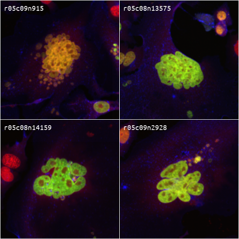

Biomedical Engineer and Data Scientist
Unraveling the phenotypic dysregulation in complex diseases
I develop and apply high-throughput technologies to study complex biological systems. Thus far, my research has yielded novel computational methods to analyze imaging- and DNA sequencing-based biomolecular data, and insights into systems ranging from microbes, RNA viruses, yeast to neurological and cardiovascular disease models. My pursuit of basic science includes active collaborations with diverse biomedical researchers to drive discoveries that can have an impact on human health.
Currently, I am a postdoctoral scholar at the University of California, San Francisco. Here, I am diversifying my research toolkit with training in a wet-lab heavy environment, specifically focusing on CRISPR technologies, multiplexed imaging, and cancer systems biology under the mentorship of Drs. Michael McManus and Shalin Mehta. My postdoctoral research involves developing a technology for genome-scale pooled optical CRISPR screens and applying it to study the connections between nucleolar biology and cell cycle.
In the future, I aim to continue my research in unravelling the phenotypes associated with functional genetic elements and drive the development of novel therapies and diagnostics for complex diseases.
 Pooled optical CRISPR screens. The large majority of human genes do not have an impact on cell proliferation. Yet, high-throughput functional studies of genetic elements have largely focused on cell viability due to the technological challenges in large-scale measurements of more complex phenotypes, e.g., subcellular structures and localization of proteins/RNAs. If we could characterize the phenotypic impacts of perturbing all human genes, it could help us identify new therapies for genetic diseases. During my postdoctoral work, I have led the development of a cost-effective technology that scales up protein barcodes for the purpose of pooled optical CRISPR screens of mammalian cell cultures in multi-well plates. Currently, I am applying this technology to study the genetic networks that link the nucleolus and cell cycle.
Single-cell profiling. The technological advances of the recent decades have laid bare the immense heterogeneity that exists
in molecular compositions of single cells within and between tissues. At the Gladstone Institute of Data
Science and Biotechnology, San Francisco, I powered diverse single-cell studies of cardiovascular, neurological, and infectious disease models.
Additionally, I developed a novel stochastic modeling framework for the probability distributions of single-cell mRNA and protein counts.
In my current postdoctoral work, I am developing comprehensive analytical frameworks to analyze
image-based single-cell profiling data. In the future, I aim to integrate data from diverse high-throughput technologies to unravel the
mechanisms underlying single-cell heterogeneity.
Overlapping interests? Drop a note!